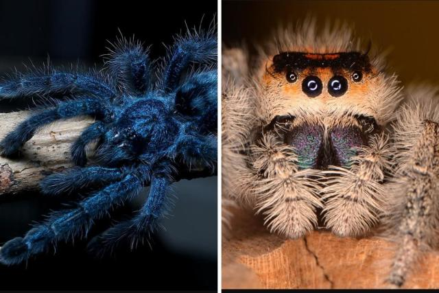
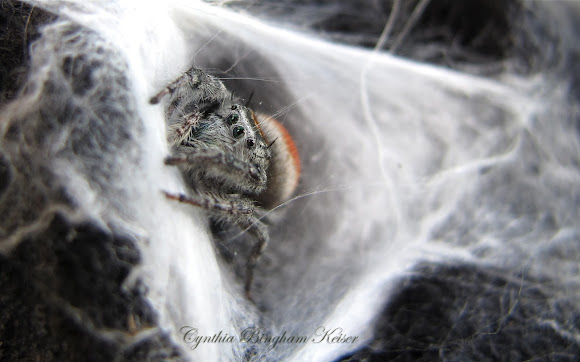

Spindle and Spore play hide-and-seek for hours, their laughter and excitement ringing through the thick grass. They flit in and out of the shadows, their tiny legs moving quickly across the damp ground. Spinner finds a good hiding place behind a cluster of flowers, while Spore scrambles up a tree, his small body blending into the bark.
The two spiders take turns hunting and hiding, with each game more exciting than the last. They tease one other lightly, and their friendship grows stronger with each shared moment of pleasure and adventure. Spinner experiences a newfound sense of freedom and happiness, and she is happy for her new buddy's affection.
As they play, the sky overhead progressively darkens, the orangey pink gradient giving way to a deep, velvety black. Spinner and Spore are so caught up in their game that they don't notice the fading light until it's dark outside. The landscape's formerly bright colors have faded into shadow, and the sounds of the night have begun to fill the air.
Spindle and Spore stand facing each other, reluctant to say goodbye. They have shared an unforgettable day of adventure and friendship, and neither wants it to end. Spore's eyes light up with an idea, and he invites Spinner to build a new web near the burrow hole he calls home.
Spindle's heart leaps with joy at the thought of continuing their friendship. She accepts Spore's invitation with a grateful smile, excited at the prospect of new adventures with her newfound friend. Together, they set out to find the perfect spot for Spinner's new web, a place where they can play together every day!
